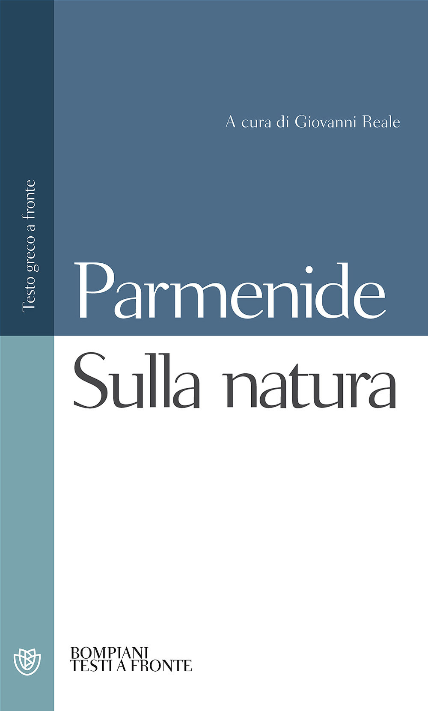

11:10 · 3 OPERE
Scienza, pensiero e senso comune.
Il filo del discorso
Una riflessione sul significato delle parole conduce dal Cratilo al problema del rapporto fra realtà e percezione. Caldarella accosta il logos di Eraclito, il prologo di Giovanni e il poema di Parmenide per discutere le radici del pensiero filosofico. Gli esempi dell’atomo e della forma della Terra mostrano, nel suo ragionamento, perché l’esperienza immediata non esaurisca la conoscenza. Il finale richiama Einstein e il ruolo della bellezza teorica, presentando il pensiero come capacità di oltrepassare ciò che appare ovvio.
I libri nel discorso

Cratilo
Copertina: Carocci · 2022
Copertina autentica controllata visivamente. Edizione di riferimento; non identifica l’esemplare usato o citato nel video.
Titolo del dialogo e autore sono annunciati nella riflessione semantica.
Passaggio 0:39 ↗ · Fonti e libro ↗
Vangelo secondo Giovanni
Copertina del volume completo: San Paolo, 2014 · Nuova Versione dai Testi Antichi · edizione di riferimento
Vangelo secondo Giovanni è un libro della Bibbia. L’immagine mostra il volume completo San Paolo di riferimento, non un’edizione autonoma del singolo libro e non una versione identificata nella citazione.
Il Vangelo di Giovanni e il suo inizio sono richiamati nel confronto sul logos.
Passaggio 3:41 ↗ · Fonti e libro ↗
Sulla natura
Copertina: Bompiani · Testi a fronte · 2001
Copertina autentica controllata visivamente. Edizione di riferimento; non identifica l’esemplare usato o citato nel video.
Parmenide e Perì phýseōs sono nominati insieme al racconto della dea.
Passaggio 3:46 ↗ · Fonti e libro ↗Minutaggi ricavati da testi automatici, da riascoltare. Le identificazioni probabili sono segnalate accanto ai libri.